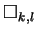
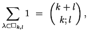
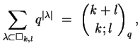
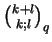

First Homework
Math 662, Young Tableaux
28 September, 2004
- Prove that conjugation of Young diagrams induces an
anti-automorphism for the dominance partial order on
partitions.
- Let
 be the partition (lk)
of box shape with k rows and l columns.
Adapt the first proof of the identity

to prove the corresponding weighted version

where
 is the q-binomial coefficient of
Gauß.
(Replace each integer n in the definition of the ordinary
binomial coefficient by the q-integer
(qn-1)/(q-1) = qn-1
+ qn-2 + ... +
q2 + q + 1.)
- Prove that the following operations on tableaux commute with
standardization
- Schützenberger's jeu de taquin
- Schensted insertion.
- Formulate and prove a precise statement concerning the
reversibility of Schensted insertion.
- Following the proofs in the course about longest disjoint increasing
subsequences, formulate and prove a result about longest
disjoint decreasing subsequences, and the relation between
increasing and decreasing subsequences.
- Show that column insertion preserves Knuth equivalence of words.
- Prove or disprove: The `switching' defined in the
combinatorial proof that Schur functions are symmetric
defines an action of the infinite symmetric group on tableaux.